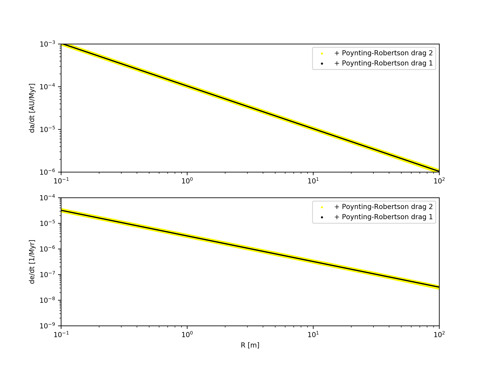

Poynting-Robertson drag¶
The Poynting-Robertson drag is implemented according to [BurnsLamySoter79] and is available in the schemes (we recommend scheme 1):
- Time averaged change in sami-major axis and eccentricity \(\frac{da}{dt}\), \(\frac{de}{dt}\)set
Use Poynting-Robertson = 2in theparam.datfile.See Equation (7)
The following parameters are relevant for the Poynting-Robertson drag and can be set in the param.dat file:
Use Poynting-RobertsonSolar Constant: Solar Constant at 1 AU in W /m^2Radiation Pressure Coefficient Qpr(in general assumed to be 1)
Test of the Poynting-Robertson drag¶
In Fig. 2 is shown a test of the Poynting-Robertson drag for the same initial conditions as in Test of the Yarkovsky effet, but with eccentricities \(\neq\) 0.
Use Poynting-Robertson = 1 (2)
Solar Constant = 1367
Radiation Pressure Coefficient Qpr = 1
Semi-major axis a = 2 AU
Eccentricity = 0.05
Inclination = 0
Argument of perihelion = 0 - 2 \(\pi\)
Longitude of ascending node = 0 - 2 \(\pi\)
Mean anomaly = 0 - 2 \(\pi\)
Density \(\rho\) = 3500.0 kg/m^3
Physical radius R = 0.1 - 100 m

Fig. 2 Drift rate of the Poynting-Robertson drag. Computed after 10000 years and averaged over 1 orbit.¶